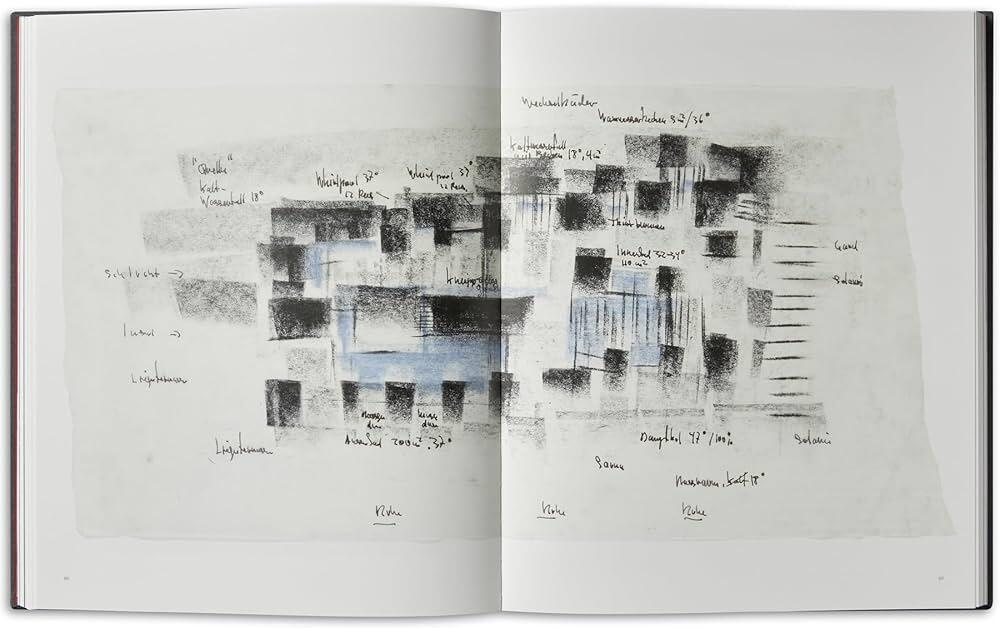
La composizione non è una somma di parti, ma un sistema di relazioni in cerca di coerenza. Rappresentarla con strumenti diversi – pianta, sezione, modello – significa interrogarla criticamente. Ogni cambio di scala o di mezzo svela fragilità, conferme o nuove tensioni. La forma non si dichiara, si costruisce nel confronto con i suoi strumenti: è un processo di verifica più che di affermazione.
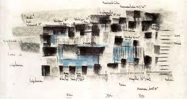
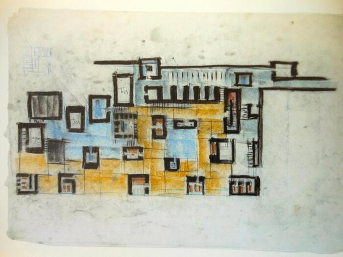
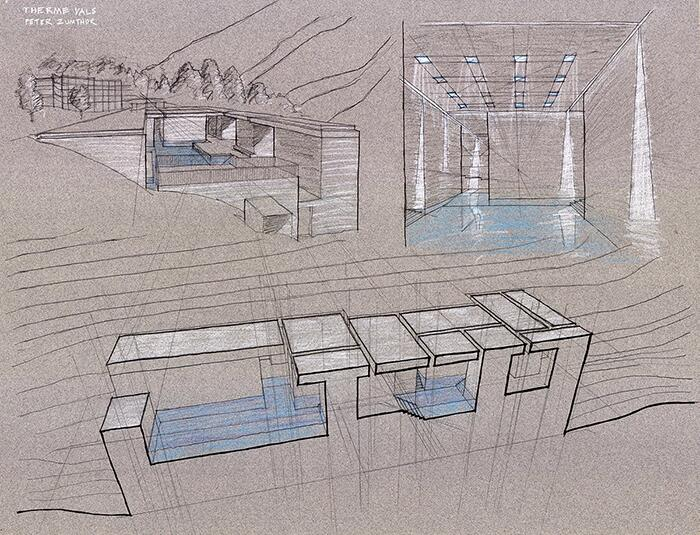
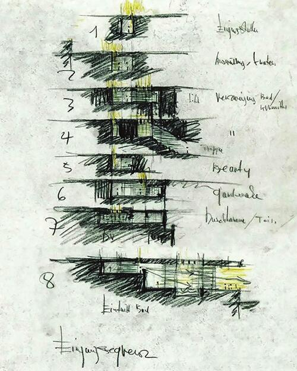
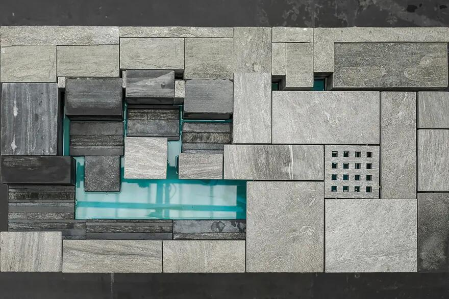
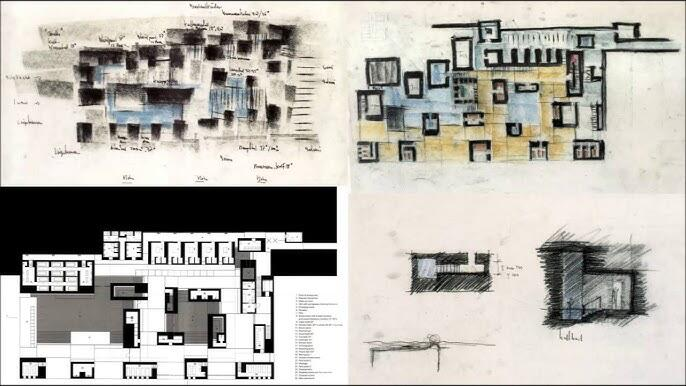
Il progetto di Peter Zumthor per le Therme Vals è stato guidato dall’idea di creare una struttura simile a una grotta o a una cava incastonata nel fianco della collina, utilizzando la pietra quarzite di Vals locale come fonte di ispirazione e materiale principale. Il suo processo di progettazione iniziale si è basato in gran parte su modelli fisici e schizzi disegnati a mano per esplorare l’atmosfera spaziale e l’integrazione con il paesaggio.
Schizzi concettuali e progetti
Le idee iniziali di Zumthor enfatizzavano un’architettura che non si imponesse sul paesaggio, ma che piuttosto emergesse da esso come un evento naturale. I primi schizzi si concentravano sul rapporto tra la forma costruita e la topografia naturale, spesso riducendo la sezione trasversale della struttura a elementi chiave come l’ingresso del tunnel buio, la galleria rialzata “a sporgenza di pietra” (Felsband) e l’apertura alla luce.
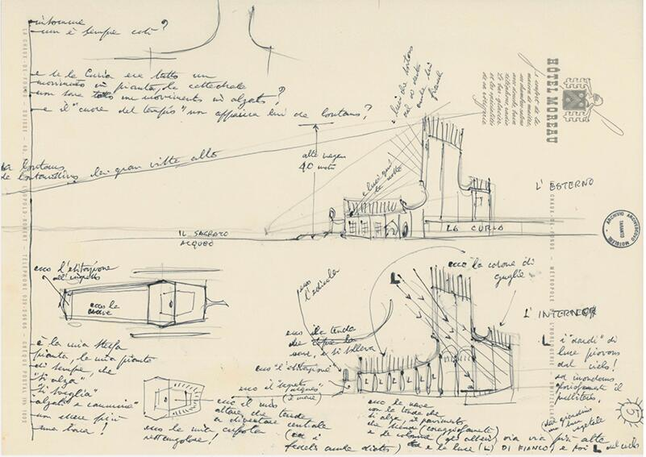
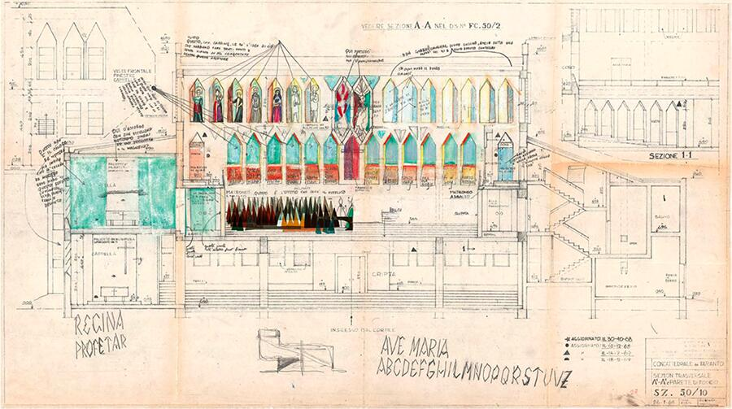
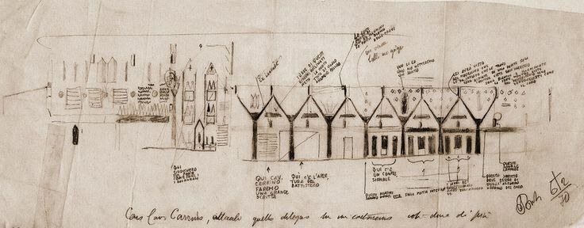
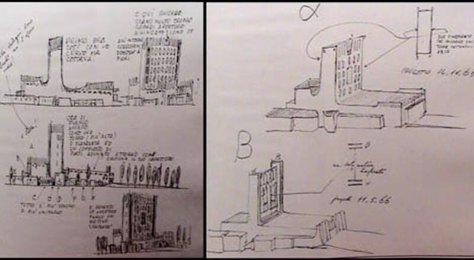
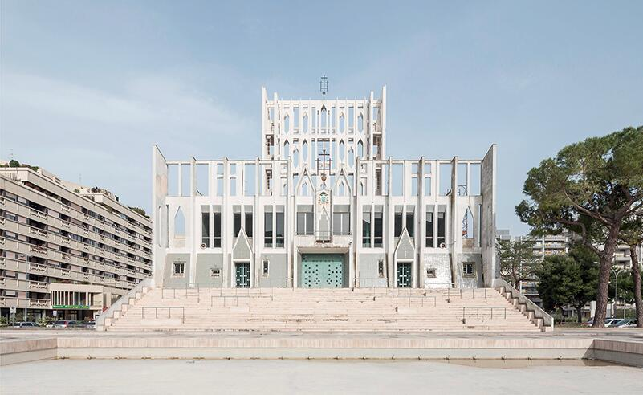
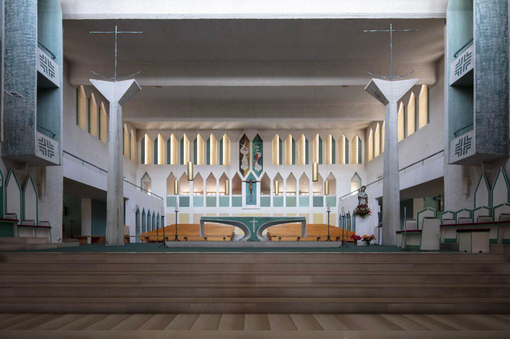
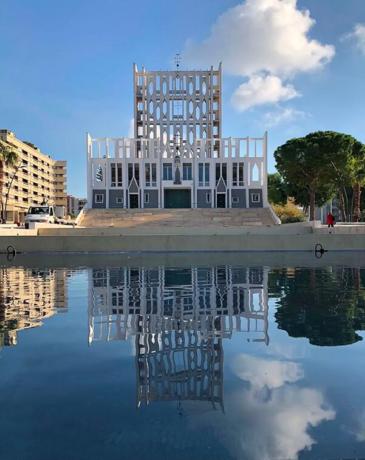
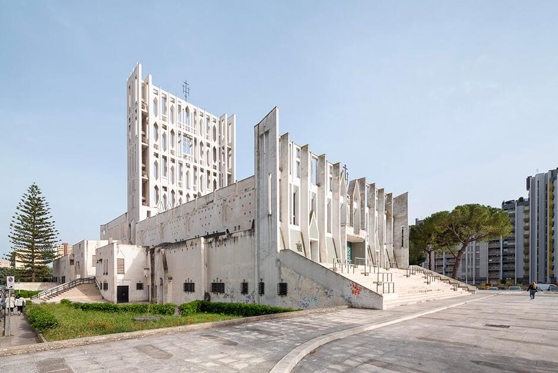
Il progetto di Gio Ponti per la Concattedrale Gran Madre di Dio di Taranto si è evoluto attraverso un processo complesso che ha coinvolto tre distinti progetti primari: “il Tempio”, “la Navata” e il progetto finale, “la Vela”. Questa evoluzione è stata guidata dalla sua visione di uno spazio sacro moderno, leggero e arioso, che fosse una testimonianza concreta delle riforme del Concilio Vaticano II.
L’evoluzione del progetto
Nel 1964 Ponti fu incaricato dall’arcivescovo Guglielmo Motolese di progettare una nuova cattedrale per la città di Taranto, in espansione. Il processo di progettazione ha coinvolto numerose idee e soluzioni intermedie prima che fosse definita la forma finale e iconica.
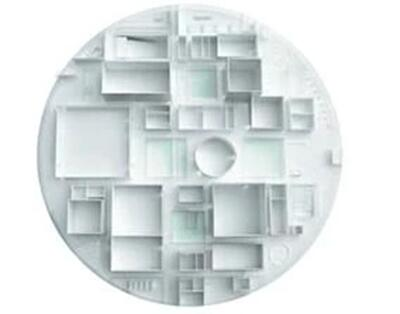
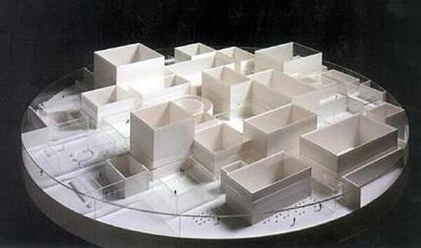
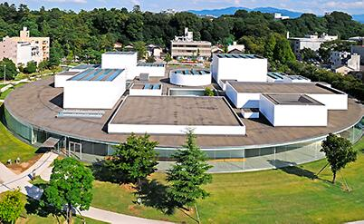
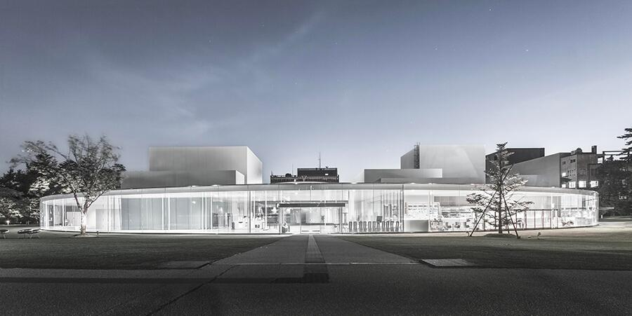
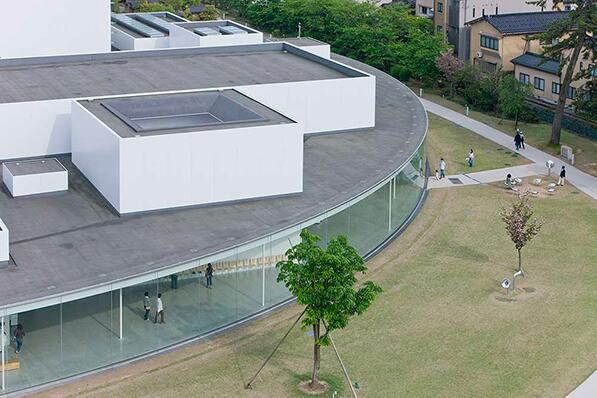
Il Museo d’Arte Contemporanea del XXI Secolo di Kanazawa, progettato da SANAA, è concepito come un “parco” pubblico circolare che integra il museo nella città piuttosto che ergersi come un’istituzione imponente. Il suo design si concentra sulla trasparenza, sul flusso orizzontale e su una disposizione non gerarchica, ottenuta attraverso una disposizione unica di forme e spazi.
Concetto architettonico e progetti
L’idea architettonica centrale si basa su un grande cerchio di vetro a basso profilo (112,5 metri di diametro) all’interno del quale sono disposti vari spazi espositivi a forma di scatola e cilindrici.
I diagrammi architettonici del museo illustrano il quadro concettuale, spesso utilizzando forme geometriche semplici per mostrare la relazione tra gli elementi dell’edificio: